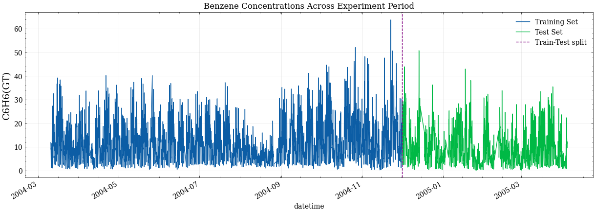
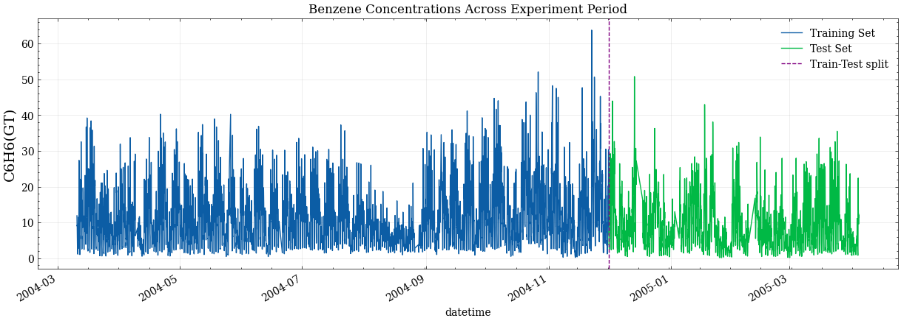

My featured post is the capstone project for my IBM Data Science capitalisation course. Space X advertises rocket launches at a much lower rate than its competitors.
Space X’s price advantage originates from the company’s ability to reuse. The first stage of the rocket launch.
In this project, I created a machine learning pipeline to predict if the first stage of a Rocket launch will land. The specialization which is 10 course series featured multiple projects with SQL and Python.
 Photo by SpaceX on Unsplash

Photo by SpaceX on Unsplash

Built a machine learning pipeline to predict benzene concentrations using Gaussian Process Regression (GPR) and other models. After cleaning skewed data caused by -200 null encodings, I extracted temporal features and compared four models. GPR achieved the best performance (RMSE: 2.33, R²: 0.883) and provided uncertainty estimates for more informed environmental decisions.
Tools: Python, scikit-learn, pandas, seaborn
Models: Linear Regression, SVM, Random Forest, GPR

In this project, we aim to predict customer churn using various features such as payment methods, contract type, and whether a customer streams TV or movies. This task is crucial for companies to identify potential 'churners' and take actions to retain them.
Photo by Image by vector4stock on Freepik>

This project tackles the SemEval-2017 Task 4A challenge: sentiment classification of English-language tweets. The goal is to classify each tweet as positive, neutral, or negative using supervised machine learning models.
View Project

Following the tensions in Nigeria as a result of growing hardship and harsh government policies. Each faction of the country blamed the other for the selection of poor leaders
which led to the hardship in the country. I carried out an analysis of the last three presidential election in Nigeria to understand how each states and geopolitical zones contributed
to the election of presidential candidates in recent times. I scraped the data from wikipedia and cleaned the data using Python. I analysed the data and created visualisations with Power BI